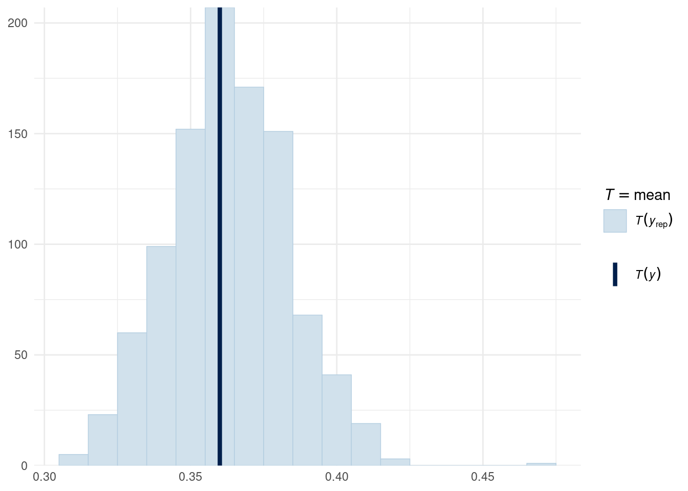
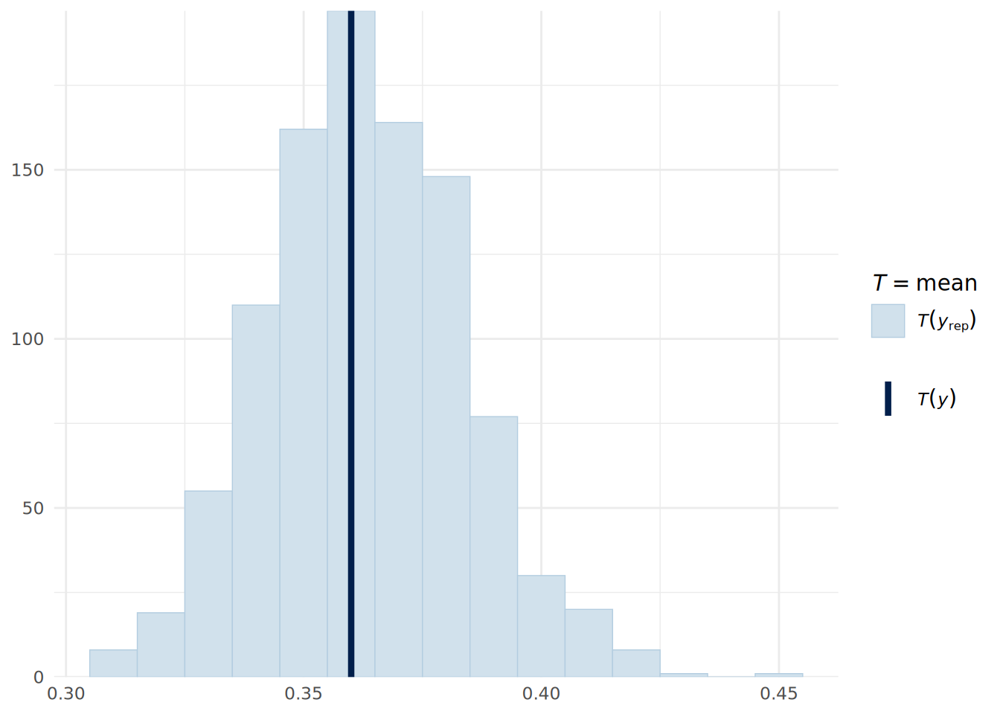
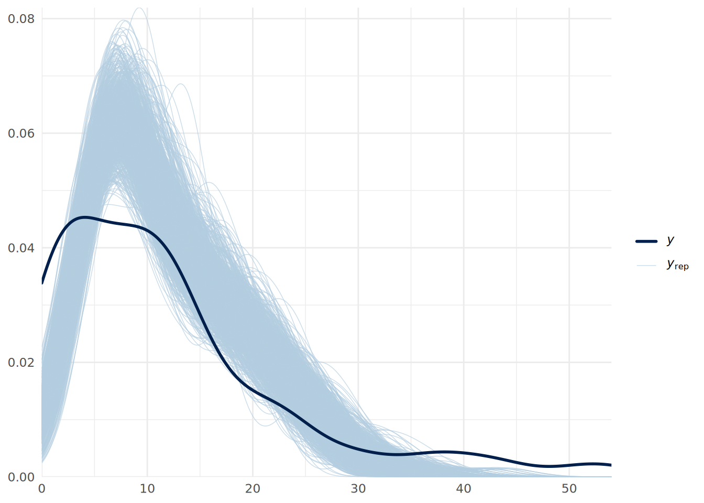
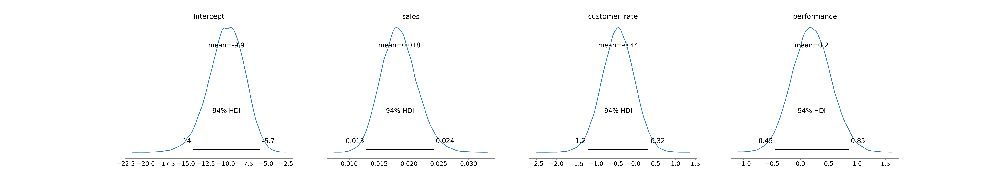
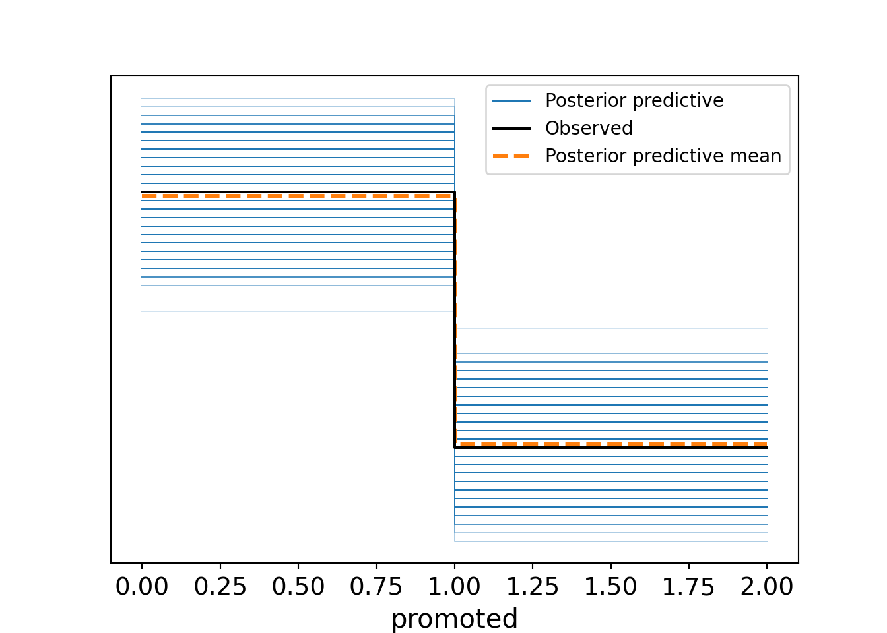

# set default options for brms
library(brms)
options(
brms.iter = 10000, # number of iterations
brms.chains = 4, # number of chains
brms.refresh = 0, # suppress output during fitting
brms.seed = 123, # set seed for reproducibility
brms.save_pars = save_pars('all') # save all parameters
)14 Fitting Other Regression Models Using Bayesian Inference
In the earlier chapters of this book, we dedicated significant attention to each variety of regression modeling technique, explaining the specifics of formulation, estimation, and interpretation. Moving forward, we should not need to do this for the Bayesian versions of these techniques. Given that we understand the underlying frequentist models from our earlier chapters, and now that we have a solid grasp of the principles and mechanics of Bayesian inference from the last two chapters, we can focus on how to implement these models in a Bayesian framework without delving too deeply into the foundational details again.
In this chapter, we will explore how to fit several other types of regression models using Bayesian methods. We will mainly focus on the mechanics of how to implement the models, and touch on any matters specific to the model type that are relevant in a Bayesian context. We will start with binomial logistic regression, and then move on to the other common logistic regression models, Poisson regression, negative binomial regression and finally we will touch on mixed effects models and Cox proportional hazards models. For each model type, we will provide code examples using the brms package in R which, as we have seen, allows for flexible Bayesian modeling using stan as the backend.
Before we proceed, let’s review a few technical tips to help ensure good performance from brms models in general, and to reduce the amount of time needed for these models to run. Readers may find the following helpful to avoid long wait times or crashes when running models using brms:
In general, computational resources with more CPUs (cores) and more memory (RAM) will lead to faster model fitting times, and will also reduce the chances of your models crashing due to insufficient memory. To run some of the models in this chapter, a minimum of 8GB of RAM is needed, with 16GB or more recommended.
Using more cores is helpful. If you are not sure how many cores you have, you can use the function
parallel::detectCores()to find out. You can then specify the number of cores to use inbrmsusing theoptions(mc.cores = <number_of_cores>)command before fitting your model. You can also specify how many cores in thebrm()function using thecoresargument. Note that using more cores will not always lead to a linear speedup in model fitting time, as there is some overhead in managing multiple chains across multiple cores.The number of iterations you will need to ensure convergence will vary by model and data. In the examples in this chapter we use 10,000 iterations, which is a generous number for most models.
Your choice of backend for
brmscan have a significant impact on model fitting time. The backend is the R package which ‘translates’ your specified model into instructions thatstanwill undersand. The default backend isrstan, which is generally reliable for most models but not very fast. Using thecmdstanrbackend can lead to faster fitting times. To usecmdstanr, you will need to install thecmdstanrpackage and set it up according to the instructions in the package documentation. Once set up, you can specify the backend inbrmsusing thebackend = "cmdstanr"argument in thebrm()function or by setting the optionoptions(brms.backend = "cmdstanr")before fitting your model.
In preparation for fitting a variety of models in this chapter, we will set some default options for brms to save having to specify these in every model run.
14.1 Bayesian binomial logistic regression
As we saw in Chapter 5, binomial logistic regression is used when each observation of our outcome is a Bernoulli random variable that can take a value of 1 (e.g., ‘success’) with probability \(p_i\) and a value of 0 (e.g., ‘failure’) with probability \(1-p_i\). That is
\[ y_i \sim \text{Bernoulli}(p_i) \]
Recall also that we model the log-odds of success as a linear function of our input variables, that is:
\[ \ln\left(\frac{P(y_i = 1)}{P(y_i = 0)}\right) = \ln\left(\frac{p_i}{1-p_i}\right) = \beta_0 + \beta_1 x_{i1} + \beta_2 x_{i2} + \cdots + \beta_p x_{ip} \]
This means that our slope coefficients must be interpreted in terms of changes in the log-odds of success for a one unit increase in the corresponding input variable, assuming no change in the other input variables. We learned that by exponentiating the coefficients, we can interpret them in terms of odds ratios, which represents the multiple of the odds of success associated with a unit change in the input variable, assuming no change in the other input variables.
In a Bayesian framework, we can fit a binomial logistic regression model using the brms package in a similar way to how we fit a linear regression model. The syntax is similar to that of frequentist logistic regression, but we specify the family as bernoulli() to explicitly indicate that each observation of our outcome is a Bernoulli random variable.
To illustrate, let’s use a random sample from our salespeople dataset from Chapter 5.
# load the salespeople dataset
url <- "https://peopleanalytics-regression-book.org/data/salespeople.csv"
salespeople <- read.csv(url)
# remove rows with NAs
salespeople <- salespeople[complete.cases(salespeople), ]
# take a random sample of 100 observations
set.seed(123)
salespeople_bayes <- salespeople[sample(nrow(salespeople), 100), ]We are interested in how the sales, customer ratings and performance ratings of our 100 salespeople affect their likelihood of promotion. We will fit a Bayesian binomial logistic regression model to this subset of data using the default flat priors.
# fit Bayesian binomial logistic regression model
library(brms)
uninf_binomial_model <- brm(
formula = promoted ~ sales + customer_rate + performance,
data = salespeople_bayes,
family = bernoulli() # for binary outcome variable
)After fitting the model, we can examine the summary of the posterior distributions of the coefficients, which will represent log-odds coefficients.
summary(uninf_binomial_model) Family: bernoulli
Links: mu = logit
Formula: promoted ~ sales + customer_rate + performance
Data: salespeople_bayes (Number of observations: 100)
Draws: 4 chains, each with iter = 10000; warmup = 5000; thin = 1;
total post-warmup draws = 20000
Regression Coefficients:
Estimate Est.Error l-95% CI u-95% CI Rhat Bulk_ESS Tail_ESS
Intercept -28.44 8.56 -48.27 -14.81 1.00 8810 9159
sales 0.06 0.02 0.03 0.10 1.00 7457 7339
customer_rate -1.88 1.26 -4.64 0.29 1.00 8790 8077
performance 1.40 0.79 -0.01 3.08 1.00 10645 9370
Draws were sampled using sample(hmc). For each parameter, Bulk_ESS
and Tail_ESS are effective sample size measures, and Rhat is the potential
scale reduction factor on split chains (at convergence, Rhat = 1).And we can transform these to posterior distributions of the odds ratios.
# convert log-odds to odds ratios
(odds_ratio_summary <- fixef(uninf_binomial_model) |>
exp()) Estimate Est.Error Q2.5 Q97.5
Intercept 4.468431e-13 5198.008019 1.092333e-21 3.711096e-07
sales 1.057232e+00 1.017337 1.029548e+00 1.100415e+00
customer_rate 1.518821e-01 3.510834 9.684400e-03 1.331130e+00
performance 4.060503e+00 2.203647 9.924827e-01 2.185864e+01We can also visualize the posterior distributions of the odds ratios using the mcmc_areas() function from the bayesplot package. An example for the sales coefficient is shown in Figure 14.1, indicating the posterior distribution of the multiple of the odds of promotion associated with an extra thousand dollars in sales.
library(bayesplot)
library(ggplot2)
mcmc_areas(
exp(as.matrix(uninf_binomial_model, pars = c("b_sales"))),
prob = 0.66,
prob_outer = 0.95
) +
theme_minimal()
sales coefficient in the Bayesian binomial logistic regression model.
Posterior predictive checks on a Bernoulli distributed outcome are not particularly intuitive unless converted into a summary statistic, such as the mean value (which is the proportion of successes). We can do this using the pp_check() function, but specifying the stat argument to indicate that we want to compare the mean in the observed data to that in the posterior predictive simulations. As can be seen in Figure 14.2, the model appears to fit the data reasonably well.
pp_check(uninf_binomial_model, type = "stat",
ndraws = 1000, binwidth = 0.01) +
theme_minimal()
For a new data point, we can obtain the posterior predictive probability of success using the posterior_predict() function, which runs draws of our posterior parameters and predicts a success or failure for each draw based on our new data. For example, for a sales person with $575k in sales, an average customer rating of 3.9 and a performance rating of 3, we can determine the posterior predictive probability of promotion as follows:
# determine posterior binary predictions new data point
new_data <- data.frame(
sales = 575, customer_rate = 3.9, performance = 3
)
posterior_preds <- posterior_predict(
uninf_binomial_model, newdata = new_data,
ndraws = 10000, seed = 123
)
# Convert to probability by taking mean
mean(posterior_preds)[1] 0.588714.2 Bayesian multinomial logistic regression
In Chapter 6, we learned that multinomial logistic regression is used when the outcome variable is categorical with more than two categories that do not have a natural ordering. In this case, we model the log-odds of membership of each category relative to a reference category as a linear function of our input variables. In a Bayesian framework, we can fit a multinomial logistic regression model using the brms package by specifying the family as categorical(). As usual, we will take a sample from our health_insurance dataset from Chapter 6 to illustrate.
# load the health insurance dataset
url <- "https://peopleanalytics-regression-book.org/data/health_insurance.csv"
health_insurance <- read.csv(url)
# take a sample of 100 observations
set.seed(123)
health_insurance_bayes <- health_insurance[
sample(nrow(health_insurance), 100),
]
# fit Bayesian Multinomial Logistic Regression model with flat priors
uninf_multinom_model <- brm(
formula = product ~ age + household + position_level + gender + absent,
data = health_insurance_bayes,
family = categorical() # for multinomial outcome variable
)Now we can view our summary.
summary(uninf_multinom_model) Family: categorical
Links: muB = logit; muC = logit
Formula: product ~ age + household + position_level + gender + absent
Data: health_insurance_bayes (Number of observations: 100)
Draws: 4 chains, each with iter = 10000; warmup = 5000; thin = 1;
total post-warmup draws = 20000
Regression Coefficients:
Estimate Est.Error l-95% CI u-95% CI Rhat Bulk_ESS Tail_ESS
muB_Intercept -11.23 3.55 -18.83 -4.87 1.00 10576 11510
muC_Intercept -14.10 3.76 -22.40 -7.63 1.00 11670 11872
muB_age 0.54 0.12 0.34 0.80 1.00 7463 8822
muB_household -2.39 0.56 -3.60 -1.40 1.00 10997 11884
muB_position_level -0.39 0.54 -1.49 0.63 1.00 14824 12659
muB_genderMale -4.04 1.35 -6.82 -1.54 1.00 12420 13286
muB_absent -0.02 0.08 -0.17 0.13 1.00 14711 13102
muC_age 0.44 0.10 0.27 0.67 1.00 7668 8776
muC_household -0.03 0.30 -0.60 0.58 1.00 13866 13238
muC_position_level -0.26 0.43 -1.16 0.55 1.00 15988 13855
muC_genderMale -1.26 1.07 -3.47 0.74 1.00 14399 14483
muC_absent -0.04 0.07 -0.17 0.09 1.00 14367 12143
Draws were sampled using sample(hmc). For each parameter, Bulk_ESS
and Tail_ESS are effective sample size measures, and Rhat is the potential
scale reduction factor on split chains (at convergence, Rhat = 1).Here we can see two sets of posterior coefficient distributions, one giving the log odds of a choice of product B over product A (beginning muB), and the other giving the log odds of a choice of product C over product A (beginning muC). As before, we can exponentiate these coefficients to obtain odds ratios.
Our posterior predictions will be in the form of integers representing the three product categories (by default this will be A=1, B=2, C=3). To do a posterior predictive check, we can use the pp_bars() function to view the proportion of each product choice in the observed data compared to that in the posterior predictive simulations, as shown in Figure 14.3.
# convert observations to numeric
y_observed <- as.numeric(as.factor(health_insurance_bayes$product))
# get 1000 posterior predictions
y_sim <- posterior_predict(uninf_multinom_model,
ndraws = 1000, seed = 123)
# posterior predictive check showing proportions for each product
ppc_bars(y_observed, y_sim) +
scale_x_continuous(breaks = c(1, 2, 3), labels = c("A", "B", "C")) +
theme_minimal()
We see that the model fits the data very well, with the median predictions closely matching the observed data.
Given new data for an individual, we can calculate the probability of the choice of each product using our posterior draws.
# new data point
new_data <- data.frame(
age = 35,
household = 3,
position_level = 3,
gender = "Male",
absent = 2
)
# posterior predictions for new data point
posterior_preds <- posterior_predict(
uninf_multinom_model, newdata = new_data,
ndraws = 10000, seed = 123
) |>
factor(labels = c("A", "B", "C"))
# convert to probabilities of each product choice
(product_probs <- prop.table(table(posterior_preds)))posterior_preds
A B C
0.6328 0.0181 0.3491 Since this model sees our first appearance of categorical input variables in the Bayesian modeling framework, it is worth making a note that brms will automatically create dummies for these variables, just as we saw in the lm() and glm() functions for frequentist regression models. If we wish to set an informed prior for the coefficient of a specific categorical input variable, we will need to specify the dummy variable associated with our prior. To determine the correct way to specify the prior, we can first look at all our priors in the model:
get_prior(uninf_multinom_model) prior class coef dpar source
(flat) b muB default
(flat) b absent muB default
(flat) b age muB default
(flat) b genderMale muB default
(flat) b household muB default
(flat) b position_level muB default
student_t(3, 0, 2.5) Intercept muB default
(flat) b muC default
(flat) b absent muC default
(flat) b age muC default
(flat) b genderMale muC default
(flat) b household muC default
(flat) b position_level muC default
student_t(3, 0, 2.5) Intercept muC defaultWe can use this syntax to specify our informed prior. As an example, if we had information that being male is associated with a 20% increase in the odds of choosing product B over product A, we would set a prior for the b coefficient of genderMale in the muB set of parameters. We would specify the mean on the log-odds scale as log(1.2), and we might set a standard deviation of log(0.1) to reflect a strong belief about this effect. This prior would be specified as follows:
# set a prior for the effect of being male on the
# log-odds of choosing product B over product A
priors <- c(
prior(
normal(log(1.2), log(0.1)), class = "b",
coef = "genderMale", dpar = "muB"
)
)We could then refit the model with this prior specified using the prior argument in the brm() function.
14.2.1 Bayesian ordinal logistic regression
In Chapter 7, we learned that ordinal logistic regression is used when the outcome variable is categorical with more than two categories that have a natural ordering. In this case, we model the log-odds of being in a category less than or equal to a certain level as a linear function of our input variables. In particular, we focused on the proportional odds model, which assumes that the effect of each input variable is the same across all thresholds of the outcome variable, allowing us to have a single coefficient for each input variable to indicate the strength of effect on the log-odds of being in a higher category in general. We also learned that it is essential to check the proportional odds assumption when fitting a proportional odds logistic regression model, as violation of this assumption can lead to false inferences from the model.
In a Bayesian framework, we can fit a proportional odds logistic regression model using the brms package by specifying the family as cumulative(), representing a cumulative logistic model. As usual we will take a sample from our soccer dataset from Chapter 7 to illustrate. We are aiming to estimate the effect of numerous factors on the discliplinary record of a player in a game - a three level ordinal outcome: “None” for no discipline, “Yellow” for a formal warning and “Red” for a sending-off. As with the polr() function for the frequentist proportional odds logistic regression model, brms will expect us to ensure our outcome variable is an ordinal factor.
# load the soccer dataset
url <- "https://peopleanalytics-regression-book.org/data/soccer.csv"
soccer <- read.csv(url)
# take a sample of 100 observations
set.seed(123)
soccer_bayes <- soccer[sample(nrow(soccer), 100), ]
# convert discipline to an ordered factor
soccer_bayes$discipline <- ordered(
soccer_bayes$discipline,
levels = c("None", "Yellow", "Red")
)
# fit proportional odds logistic regression model with flat priors
uninf_polr_model <- brm(
formula = discipline ~ .,
data = soccer_bayes,
family = cumulative() # for ordinal outcome variable
)Now we can view our summary.
summary(uninf_polr_model) Family: cumulative
Links: mu = logit
Formula: discipline ~ n_yellow_25 + n_red_25 + position + result + country + level
Data: soccer_bayes (Number of observations: 100)
Draws: 4 chains, each with iter = 10000; warmup = 5000; thin = 1;
total post-warmup draws = 20000
Regression Coefficients:
Estimate Est.Error l-95% CI u-95% CI Rhat Bulk_ESS Tail_ESS
Intercept[1] 4.42 1.32 1.91 7.13 1.00 17186 13646
Intercept[2] 6.04 1.40 3.40 8.90 1.00 16741 14059
n_yellow_25 0.39 0.18 0.05 0.74 1.00 23889 16660
n_red_25 0.76 0.25 0.29 1.28 1.00 18895 13963
positionM 1.22 0.66 -0.00 2.56 1.00 14877 13512
positionS 0.63 0.85 -1.03 2.32 1.00 15380 14959
resultL 1.25 0.64 0.04 2.52 1.00 16640 14769
resultW 0.26 0.62 -0.96 1.50 1.00 17452 15415
countryGermany 0.54 0.49 -0.41 1.52 1.00 23871 15069
level -0.54 0.50 -1.51 0.43 1.00 22289 16376
Further Distributional Parameters:
Estimate Est.Error l-95% CI u-95% CI Rhat Bulk_ESS Tail_ESS
disc 1.00 0.00 1.00 1.00 NA NA NA
Draws were sampled using sample(hmc). For each parameter, Bulk_ESS
and Tail_ESS are effective sample size measures, and Rhat is the potential
scale reduction factor on split chains (at convergence, Rhat = 1).Here we can see the posterior coefficient distributions for each input variable, representing the effect of a unit change in that variable on the log-odds of being in a higher discipline category.
In a Bayesian regression framework, an effective way to test the proportional odds assumption is to run an alternative model that does not assume proportional odds, and then compare the two models using information criteria such as from leave-one-out cross-validation (LOO-CV) . If the non-proportional odds model has a significantly better fit according to these criteria, it suggests that the proportional odds assumption may be violated. A common alternative model for ordinal regression is an adjacent category model. Here is how we can fit an adjacent category ordinal model in brms.
# fit adjacent category logistic regression model with flat priors
uninf_acat_model <- brm(
formula = discipline ~ .,
data = soccer_bayes,
family = acat() # for adjacent category ordinal outcome variable
)Now we can compare the fit using LOO:
# compare LOO for both models
loo_polr <- loo(uninf_polr_model, seed = 123)
loo_acat <- loo(uninf_acat_model, seed = 123)
loo_compare(loo_polr, loo_acat) elpd_diff se_diff
uninf_polr_model 0.0 0.0
uninf_acat_model -1.2 1.8 The LOO comparison suggests that there is no meaningful difference between the models, so we can be reasonably confident that the proportional odds assumption holds in this case.
14.3 Bayesian Poisson and negative binomial regression
In Chapter 8, we learned that Poisson regression is used when the outcome variable is a count of events that occur in a fixed period of time or space. We model the log of the expected count as a linear function of our input variables, to ensure that the count outcomes are always non-negative. This means that when we exponentiate the coefficients of our model, we see that the effects of the input variables are multiplicative on the count outcome. We also learned that Poisson regression assumes that the mean and variance of the outcome variable are equal, which may not hold in practice. When the variance exceeds the mean, we have overdispersion, which can lead to underestimated standard errors and misleading inferences from the model. In such cases, negative binomial regression can be used as an alternative, as it includes an additional shape parameter \(\theta\) to account for overdispersion.
In a Bayesian framework, we can fit a Poisson regression model using the brms package by specifying the family as poisson(). As usual we will take a sample from our absenteeism dataset from Chapter 8 to illustrate.
# load the absenteeism dataset
url <- "https://peopleanalytics-regression-book.org/data/absenteeism.csv"
absenteeism <- read.csv(url)
# take a sample of 100 observations
set.seed(123)
absenteeism_bayes <- absenteeism[sample(nrow(absenteeism), 100), ]
# fit Bayesian Poisson regression model with flat priors
uninf_poisson_model <- brm(
formula = days_absent ~ tenure + is_manager + performance_rating,
data = absenteeism_bayes,
family = poisson() # for count outcome variable
)We can now inspect the model summary.
summary(uninf_poisson_model) Family: poisson
Links: mu = log
Formula: days_absent ~ tenure + is_manager + performance_rating
Data: absenteeism_bayes (Number of observations: 100)
Draws: 4 chains, each with iter = 10000; warmup = 5000; thin = 1;
total post-warmup draws = 20000
Regression Coefficients:
Estimate Est.Error l-95% CI u-95% CI Rhat Bulk_ESS Tail_ESS
Intercept 1.21 0.18 0.86 1.55 1.00 19132 15803
tenure 0.05 0.00 0.05 0.06 1.00 18164 15843
is_manager 0.01 0.09 -0.17 0.19 1.00 18816 14270
performance_rating 0.10 0.04 0.01 0.19 1.00 19624 14897
Draws were sampled using sample(hmc). For each parameter, Bulk_ESS
and Tail_ESS are effective sample size measures, and Rhat is the potential
scale reduction factor on split chains (at convergence, Rhat = 1).Here we can see the posterior coefficient distributions for each input variable, representing the effect of a unit change in that variable on the log of the expected count of days absent. By exponentiating these coefficient distributions, we can interpret them as multiplicative effects on the expected count.
We can do a posterior predictive check in the usual way as in Figure 14.4.
pp_check(uninf_poisson_model, ndraws = 1000) +
theme_minimal()
We can see some issues with our predictive fit. This suggests that we may have overdispersion in our data. We can address this by fitting a negative binomial regression model instead, which we can do in brms by specifying the family as negbinomial().
# fit Bayesian negative binomial regression model with flat priors
uninf_negbin_model <- brm(
formula = days_absent ~ tenure + is_manager + performance_rating,
data = absenteeism_bayes,
family = negbinomial() # for count outcome with overdispersion
)We can now inspect the model summary.
summary(uninf_negbin_model) Family: negbinomial
Links: mu = log
Formula: days_absent ~ tenure + is_manager + performance_rating
Data: absenteeism_bayes (Number of observations: 100)
Draws: 4 chains, each with iter = 10000; warmup = 5000; thin = 1;
total post-warmup draws = 20000
Regression Coefficients:
Estimate Est.Error l-95% CI u-95% CI Rhat Bulk_ESS Tail_ESS
Intercept 1.22 0.50 0.22 2.21 1.00 24895 14617
tenure 0.05 0.01 0.04 0.07 1.00 22186 15271
is_manager 0.03 0.33 -0.59 0.70 1.00 24454 14768
performance_rating 0.09 0.13 -0.17 0.36 1.00 24358 14950
Further Distributional Parameters:
Estimate Est.Error l-95% CI u-95% CI Rhat Bulk_ESS Tail_ESS
shape 1.55 0.27 1.09 2.13 1.00 21232 15738
Draws were sampled using sample(hmc). For each parameter, Bulk_ESS
and Tail_ESS are effective sample size measures, and Rhat is the potential
scale reduction factor on split chains (at convergence, Rhat = 1).We can see that our estimated errors have increased, leading to more conservative inferences, and we see a posterior distribution for the shape parameter \(\theta\), with the low values indicating substantial overdispersion. We can do another posterior predictive check to verify if the model fits the data better as in Figure 14.5.
pp_check(uninf_negbin_model, ndraws = 1000) +
xlim(0, 50) +
theme_minimal()
Finally, we can also use LOO-CV to formally compare the fit of the two models, which establishes a substantially superior fit for the negative binomial model.
# compare LOO for both models
loo_poisson <- loo(uninf_poisson_model, seed = 123)
loo_negbin <- loo(uninf_negbin_model, seed = 123)
loo_compare(loo_poisson, loo_negbin) elpd_diff se_diff
uninf_negbin_model 0.0 0.0
uninf_poisson_model -211.6 41.7 Note that zero-inflated versions of both Poisson and negative binomial regression models can also be fit in brms by specifying the families as zero_inflated_poisson() and zero_inflated_negbinomial() respectively. These models will generate the posterior of an additional zero-inflation parameter zi, representing the probability that a zero observation is an excess (structural) zero.
14.4 Bayesian mixed effects models
In Chapter 9, we learned that mixed effects models (also known as multilevel or hierarchical models) are used when our data has a hierarchical structure, such as students nested within schools or employees nested within departments. These models allow us to account for the non-independence of observations within groups by including random effects that capture the variability between groups. In a Bayesian framework, we can fit mixed effects models using the brms package by specifying random effects in the model formula using the (1 | group_variable) syntax which we learned in Chapter 9. There is no need to specify a different family for mixed effects models in brms; we simply include the random effects in the formula and apply the appropriate model family for the outcome variable type.
To illustrate, let’s use a random sample from our speed_dating dataset from Chapter 9 and run a Bayesian binomial mixed effects model to understand how the various factors considered by individuals over multiple speed dates relate to the overall binary decision they made about their dates.
# load the speed dating dataset
url <- "https://peopleanalytics-regression-book.org/data/speed_dating.csv"
speed_dating <- read.csv(url)
# remove rows with NAs
speed_dating <- speed_dating[complete.cases(speed_dating), ]
# take a sample of 1000 observations
set.seed(123)
speed_dating_bayes <- speed_dating[sample(nrow(speed_dating), 1000), ]
# fit Bayesian Binomial Logistic Mixed Effects model with flat priors
uninf_mixed_binomial_model <- brm(
formula = dec ~ agediff + samerace + attr + intel + prob + (1 | iid),
data = speed_dating_bayes,
family = bernoulli(), # for binary outcome variable
save_pars = save_pars('all', group = TRUE) # save group-level parameters
)Now we can view our summary.
summary(uninf_mixed_binomial_model) Family: bernoulli
Links: mu = logit
Formula: dec ~ agediff + samerace + attr + intel + prob + (1 | iid)
Data: speed_dating_bayes (Number of observations: 1000)
Draws: 4 chains, each with iter = 10000; warmup = 5000; thin = 1;
total post-warmup draws = 20000
Multilevel Hyperparameters:
~iid (Number of levels: 449)
Estimate Est.Error l-95% CI u-95% CI Rhat Bulk_ESS Tail_ESS
sd(Intercept) 2.95 0.44 2.17 3.91 1.00 3157 6004
Regression Coefficients:
Estimate Est.Error l-95% CI u-95% CI Rhat Bulk_ESS Tail_ESS
Intercept -14.32 1.92 -18.50 -10.93 1.00 3973 6472
agediff -0.03 0.05 -0.13 0.07 1.00 12761 14227
samerace -0.01 0.30 -0.59 0.59 1.00 12586 13611
attr 1.36 0.16 1.08 1.69 1.00 5088 8137
intel 0.16 0.13 -0.07 0.42 1.00 8002 9609
prob 0.78 0.12 0.57 1.02 1.00 4607 7221
Draws were sampled using sample(hmc). For each parameter, Bulk_ESS
and Tail_ESS are effective sample size measures, and Rhat is the potential
scale reduction factor on split chains (at convergence, Rhat = 1).Here we can see the posterior coefficient distributions for each fixed effect, representing the effect of a unit change in that variable on the log-odds of a positive decision about a date. We can also see the estimated standard deviation of the random intercepts for each individual under the Multilevel Hyperparameters, which captures the variability in baseline log-odds of a positive decision across individuals. A posterior predictive check can be done in the same way as for a standard Bayesian binomial logistic regression model.
14.5 Bayesian Cox proportional hazards models
In Chapter 10, we learned that Cox proportional hazards models are used in survival analysis to model an event that occurs over time, such as employee turnover or customer churn. These models estimate the hazard function, which represents the instantaneous risk of the event occurring at a given time, conditional on survival up to that time. The Cox model assumes that the hazard ratios between individuals are proportional over time, allowing us to estimate the effect of input variables on the hazard function without specifying the baseline hazard function.
In a Bayesian framework, we can fit Cox proportional hazards models using the brms package by specifying the family as cox(). If your data contains censored observations, the model formula should take the general form time | cens(1 - event) ~ x1 + x2 + ..., where time is the variable indicating the time of the observation and event is the binary variable indicating if the event had occurred. As usual we will take a sample from our job_retention dataset from Chapter 10 to illustrate.
# load the job retention dataset
url <- "https://peopleanalytics-regression-book.org/data/job_retention.csv"
job_retention <- read.csv(url)
# take a sample of 1000 observations
set.seed(123)
job_retention_bayes <- job_retention[sample(nrow(job_retention), 1000), ]
# fit Bayesian Cox Proportional Hazards model with flat priors
uninf_cox_model <- brm(
formula = month | cens(1 - left) ~ gender +
field + level + sentiment,
data = job_retention_bayes,
family = cox() # for survival outcome variable
)We can now view the model summary.
summary(uninf_cox_model) Family: cox
Links: mu = log
Formula: month | cens(1 - left) ~ gender + field + level + sentiment
Data: job_retention_bayes (Number of observations: 1000)
Draws: 4 chains, each with iter = 10000; warmup = 5000; thin = 1;
total post-warmup draws = 20000
Regression Coefficients:
Estimate Est.Error l-95% CI u-95% CI Rhat Bulk_ESS
Intercept 0.54 0.40 -0.17 1.43 1.01 811
genderM -0.06 0.12 -0.29 0.16 1.00 10233
fieldFinance 0.06 0.13 -0.20 0.31 1.00 8743
fieldHealth 0.17 0.27 -0.37 0.67 1.01 1474
fieldLaw 0.03 0.33 -0.66 0.63 1.00 6705
fieldPublicDGovernment 0.25 0.16 -0.07 0.57 1.00 10167
fieldSalesDMarketing -0.02 0.21 -0.43 0.38 1.00 7380
levelLow -0.08 0.17 -0.40 0.26 1.00 7261
levelMedium 0.01 0.19 -0.37 0.39 1.00 2783
sentiment -0.13 0.03 -0.18 -0.07 1.00 4703
Tail_ESS
Intercept 257
genderM 10642
fieldFinance 9481
fieldHealth 975
fieldLaw 9548
fieldPublicDGovernment 9734
fieldSalesDMarketing 8846
levelLow 7792
levelMedium 3098
sentiment 7053
Draws were sampled using sample(hmc). For each parameter, Bulk_ESS
and Tail_ESS are effective sample size measures, and Rhat is the potential
scale reduction factor on split chains (at convergence, Rhat = 1).Here we can see the posterior coefficient distributions for each input variable, representing the effect of a unit change in that variable on the log-odds of instantaneous employee attrition, assuming no change in the other input variables. By exponentiating these coefficient distributions, we can interpret them as odds ratios describing the multiple on the attrition hazard associated with a unit change in the input variable assuming no change in the other input variables.
Note that it is not currently possible to do posterior predictive checks for Cox proportional hazards models in brms, due to the complexity of the survival outcome and censoring mechanism. However, we can assess the fit of the model using other methods, such as examining the estimated survival curves for different groups or using LOO-CV to estimate the expected log predictive density (ELPD).
14.6 Fitting other regression models using Python
To fit similar models using Python, we can use bambi for model specification and fitting with arviz for summarizing and visualizing posteriors. The workflow is very similar to that which we described in Section 13.8, but specifying the appropriate model type in bambi using the family argument in the Model() constructor. The table below gives the corresponding family names in bambi for various regression models we have discussed in this chapter:
| Regression Model | bambi Family Name |
|---|---|
| Linear Regression | gaussian |
| Binomial Logistic Regression | bernoulli |
| Multinomial Logistic Regression | categorical |
| Ordinal Logistic Regression | cumulative |
| Poisson Regression | poisson |
| Negative Binomial Regression | negativebinomial |
As an example, to fit our Bayesian binomial logistic regression model from Section 14.1 in this chapter using bambi in Python, first we specify and build the model.
import pandas as pd
import bambi as bmb
import arviz as az
# load the salespeople dataset
url = """
https://peopleanalytics-regression-book.org/data/salespeople.csv
"""
salespeople = pd.read_csv(url)
# remove rows with NAs
salespeople = salespeople.dropna()
# take a random sample of 100 observations
salespeople_bayes = salespeople.sample(n=100, random_state=123)
# spwecify uninformed Bayesian binomial logistic regression model
uninf_binomial_model = bmb.Model(
formula="promoted ~ sales + customer_rate + performance",
data=salespeople_bayes,
family="bernoulli" # for binary outcome variable
)
# build and view model
uninf_binomial_model.build()
print(uninf_binomial_model) Formula: promoted ~ sales + customer_rate + performance
Family: bernoulli
Link: p = logit
Observations: 100
Priors:
target = p
Common-level effects
Intercept ~ Normal(mu: 0.0, sigma: 1.5)
sales ~ Normal(mu: 0.0, sigma: 0.0053)
customer_rate ~ Normal(mu: 0.0, sigma: 1.064)
performance ~ Normal(mu: 0.0, sigma: 1.0743)If we are comfortable with our priors, we proceed to fit the model:
# fit the model
fitted = uninf_binomial_model.fit(
draws=10000, chains=4, random_seed=123
)We can then summarize the posterior distributions of the coefficients using arviz as follows:
# summarize the posterior distributions
az.summary(fitted) mean sd hdi_3% ... ess_bulk ess_tail r_hat
Intercept -9.943 2.238 -14.074 ... 53135.0 31337.0 1.0
sales 0.018 0.003 0.013 ... 41696.0 31359.0 1.0
customer_rate -0.444 0.406 -1.202 ... 46972.0 31904.0 1.0
performance 0.197 0.346 -0.448 ... 52186.0 33108.0 1.0
[4 rows x 9 columns]We can plot the posterior distributions of the log-odds coefficients as in Figure 14.6.
# Plot posterior distributions
az.plot_posterior(fitted)
bambi in Python.
And the posterior predictive check can be performed as in Figure 14.7.
# perform posterior predictive check
uninf_binomial_model.predict(fitted, kind="response", random_seed=123)
az.plot_ppc(fitted, num_pp_samples=1000, random_seed=123)
bambi in Python.
14.7 Learning exercises
14.7.1 Discussion questions
- What is the correct family to specify in
brmsfor fitting a Bayesian binomial logistic regression model with a binary outcome variable? - What statistic is most appropriate for a posterior predictive check for a Bayesian binomial logistic regression model?
- What is the most appropriate way to do a posterior predictive check for a Bayesian multinomial logistic regression model?
- What is the correct family to specify for fitting a Bayesian proportional odds logistic regression model in
brms? - How can we test the proportional odds assumption for a Bayesian proportional odds logistic regression model using
brms? - Describe some ways of diagnosing overdispersion when fitting a Bayesian Poisson regression model.
- Describe how to set informed priors for categorical input variables in a Bayesian regression model in
brms. - If you are modeling a censored survival outcome using a Bayesian Cox proportional hazards model in
brms, how would you write the outcome variable in your model formula?
14.7.2 Data exercises
For each of the earlier (frequentist) chapters on the methods outlined in this chapter, use the problem and dataset provided in the exercises at the end of each chapter.
- Generate two smaller versions of the dataset by taking random samples of the rows - aim for around 10-20% of the original observations in each dataset. Don’t forget to remove your first sample before taking the second sample.
- Fit a Bayesian version of the appropriate regression model using the first dataset and flat priors.
- Visualize and examine the posterior distributions of the coefficients and interpret them in the context of the problem.
- For each model, conduct appropriate posterior predictive checks to assess the fit of the model to the data. Comment on the results. Are you comfortable that the model is a good fit?
- If you are concerned about the fit, experiment with alternative model specifications to improve the fit. Justify your choices and comment on the results.
- Ensure you check any underlying assumptions of your model type (eg proportional odds for ordinal logistic regression, equidispersion for Poisson regression) and take appropriate action if any assumptions are violated.
- Experiment with setting informed priors for one or two coefficients. Refit the model with these priors and compare the results to the model with flat priors.
- Experiment with generating posterior predictions for new data points. Comment on the results.
- Using the approach described in Section 13.6, update your model with the second dataset.
- Examine the updated posteriors and perform an updated posterior predictive check to assess the fit of the updated model to the new data. Comment on the results.